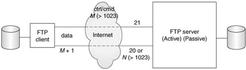

17.2. Transferring Files17.2.1. File Transfer Internet ProtocolsOne of the most popular Internet activities is file exchange. It happens all the time. There have been many protocols to transfer files over the Internet, with some of the most popular including the File Transfer Protocol (FTP), the Unix-to-Unix Copy Protocol (UUCP), and of course, the Web's Hypertext Transfer Protocol (HTTP). We should also include the remote (Unix) file copy command rcp (and now its more secure and flexible cousins scp and rsync). HTTP, FTP, and scp/rsync are still quite popular today. HTTP is primarily used for Web-based file download and accessing Web services. It generally doesn't require clients to have a login and/or password on the server host to obtain documents or service. The majority of all HTTP file transfer requests are for Web page retrieval (file downloads). On the other hand, scp and rsync require a user login on the server host. Clients must be authenticated before file transfers can occur, and files can be sent(upload) or retrieved (download). Finally, we have FTP. Like scp/rsync, FTP can be used for file upload or download; and like scp/rsync, it employs the Unix multi-user concepts of usernames and passwords: FTP clients must use the login/password of existing users. However, FTP also allows anonymous logins. Let us now take a closer look at FTP. 17.2.2. File Transfer Protocol (FTP)The File Transfer Protocol was developed by the late Jon Postel and Joyce Reynolds in the Internet Request for Comment (RFC) 959 document and published in October 1985. It is primarily used to download publicly accessible files in an anonymous fashion. It can also be used by users to transfer files between two machines, especially in cases where you're using a Unix system as for file storage or archiving and a desktop or laptop PC for work. Before the Web became popular, FTP was one of the primary methods of transferring files on the Internet, and one of the only ways to download software and/or source code. As described previously, one must have a login/password for accessing the remote host running the FTP server. The exception is anonymous logins, which are designed for guest downloads. These permit clients who do NOT have accounts to download files. The server's administrator must set up an FTP server with anonymous logins in order for these to occur. In these cases, the "login" of an unregistered user is called "anonymous," and the password is generally the e-mail address of the client. This is akin to a public login and access to directories that were designed for general consumption as opposed to logging in and transferring files as a particular user. The list of available commands via the FTP protocol is also generally more restrictive than that for real users. The protocol is diagrammed below in Figure 17-1 and works as follows:
Figure 17-1. FTP Clients and Servers on the Internet. The client and server communicate using the FTP protocol on the command or control port while data is transferred using the data port.Of course, this is generally how it works. Sometimes there are circumstances whereby the entire transaction is terminated before it's completed. These include being disconnected from the network if one of the two hosts crash or because of some other network connectivity issue. For inactive clients, FTP connections will generally time out after 15 minutes (900 seconds) of inactivity. Under the covers, it is good to know that FTP uses only TCP (see earlier chapter on network programming)it does not use UDP in any way. Also, FTP may be seen as a more "unusual" example of client/server programming because both the clients and the servers use a pair of sockets for communication: one is the control or command port (port 21), and the other is the data port(sometimes port 20). We say "sometimes" because there are two FTP modes, Active and Passive, and the server's data port is only 20 for Active mode. After the server sets up 20 as its data port, it "actively" initiates the connection to the client's data port. For Passive mode, the server is only responsible for letting the client know where its random data port is, and the client must initiate the data connection. As you can see in this mode, the FTP server is taking a more "passive" role in setting up the data connection. Finally, there is now support for a new Extended Passive Mode to support version 6 Internet Protocol (IPv6) addressessee RFC 2428. Python has support for most Internet protocols, including FTP. Other supported client libraries can be found at http://docs.python.org/lib/internet.html. Now let's take a look at just how easy it is to create an Internet client with Python. 17.2.3. Python and FTPSo how do we write an FTP client using Python? What we just described in the previous section covers it pretty much. The only additional work required is to import the appropriate Python module and make the appropriate calls in Python. So let us review the protocol briefly:
When using Python's FTP support, all you do is import the ftplib module and instantiate the ftplib.FTP class. All FTP activity will be accomplished using your object, i.e., logging in, transferring files, and logging out. Here is some Python pseudocode: from ftplib import FTP f= FTP('ftp.python.org') f.login('anonymous','guess@who.org') : f.quit() Soon we will look at a real example, but for now, let us familiarize ourselves with methods from the ftplib.FTP class, which you will likely use in your code. 17.2.4. ftplib.FTP Class MethodsWe outline the most popular methods in Table 17.1. The list is not comprehensive see the source code for the class itself for all methodsbut the ones presented here are those that make up the "API" for FTP client programming in Python. In other words, you don't really need to use the others as they are either utility or administrative functions or are used by the API methods later.
The methods you will most likely use in a normal FTP transaction include login(), cwd(), dir(), pwd(), stor*(), retr*(), and quit(). There are more FTP object methods not listed in the table which you may find useful. Please see the Python documentation for detailed information on FTP objects: http://python.org/docs/current/lib/ftp-objects.html 17.2.5. Interactive FTP ExampleAn example of using FTP with Python is so simple to use that you do not even have to write a script. You can just do it all from the interactive interpreter and see the action and output in real time. This is a sample session we did years ago when there was still an FTP server running at python.org: >>> from ftplib import FTP >>> f = FTP('ftp.python.org') >>> f.login('anonymous', '-help@python.org') '230 Guest login ok, access restrictions apply.' >>> f.dir() total 38 drwxrwxr-x 10 1075 4127 512 May 17 2000 . drwxrwxr-x 10 1075 4127 512 May 17 2000 .. drwxr-xr-x 3 root wheel 512 May 19 1998 bin drwxr-sr-x 3 root 1400 512 Jun 9 1997 dev drwxr-xr-x 3 root wheel 512 May 19 1998 etc lrwxrwxrwx 1 root bin 7 Jun 29 1999 lib -> usr/lib -r--r--r-- 1 guido 4127 52 Mar 24 2000 motd drwxrwsr-x 8 1122 4127 512 May 17 2000 pub drwxr-xr-x 5 root wheel 512 May 19 1998 usr >>> f.retrlines('RETR motd') Sun Microsystems Inc. SunOS 5.6 Generic August 1997 '226 Transfer complete. >>> f.quit() '221 Goodbye.' 17.2.6. Client Program FTP ExampleWe mentioned previously that an example script is not even necessary since you can run one interactively and not get lost in any code. We will try anyway. For example, let us say you wanted a piece of code that goes to download the latest copy of Bugzilla from the Mozilla Web site. Example 17.1 is what we came up with. We are attempting an application here, but even so, you can probably run this one interactively, too. Our application uses the FTP library to download the file and built it with some error-checking. Example 17.1. FTP Download Example (getLatestFTP.py)
It is not automated, however; it is up to you to run it whenever you want to perform the download, or if you are on a Unix-based system, you can set up a "cron" job to automate it for you. Another issue is that it will break if either the file or directory names change. If no errors occur when we run our script, we get the following output: $ getLatestFTP.py *** Connected to host "ftp.mozilla.org" *** Logged in as "anonymous" *** Changed to "pub/mozilla.org/webtools" folder *** Downloaded "bugzilla-LATEST.tar.gz" to CWD $ Line-by-Line ExplanationLines 19The initial lines of code import the necessary modules (mainly to grab exception objects) and set a few constants. Lines 1144The main() function consists of various steps of operation: create an FTP object and attempt to connect to the FTPs server (lines 12-17) and (return and) quit on any failure. We attempt to login as "anonymous" and bail if it fails (lines 19-25). The next step is to change to the distribution directory (lines 27-33), and finally, we try to download the file (lines 35-44). On lines 35-36, we pass a callback to retrbinary() that should be executed for every block of binary data downloaded. This is the write() method of a file object we create to write out the local version of the file. We are depending on the Python interpreter to adequately close our file after the transfer is done and not to lose any of our data. Although more convenient, your author tries to not use this style as much as possible because the programmer should be responsible for freeing resources directly allocated rather than depending on other code. In this case, we should save the open file object to a variable, say loc, and then pass loc.write in the call to ftp.retrbinary(). Also in this block of code, if for some reason we are not able to save the file, we remove the empty file if it is there to avoid cluttering up the file system (line 40). Finally, to avoid another pair of lines that close the FTP connection and return, we use a TRy-except-else clause (lines 35-42). Lines 4647This is the usual idiom for running a standalone script. 17.2.7. Miscellaneous FTPPython supports both Active and Passive modes. Note, however, that in Python 2.0 and before, Passive mode was off by default; in Python 2.1 and later, it is on by default.
Here is a list of typical FTP clients:
All four types of clients can be creating using Python. We used ftplib above to create our custom application, but you can just as well create an interactive command-line application. On top of that, you can even bring a GUI toolkit such as Tk, wxWidgets, GTK+, Qt, MFC, and even Swing into the mix (by importing their respective Python [or Jython] interface modules) and build a full GUI application on top of your command-line client code. Finally, you can use Python's urllib module to parse and perform FTP transfers using FTP URLs. At its heart, urllib imports and uses ftplib making urllib another client of ftplib. FTP is not only useful for downloading client applications to build and/or use, but it can also be helpful in your everyday job if it involves moving files between systems. For example, let us say you are an engineer or a system administrator needing to transfer files. It is an obvious choice to use the scp or rsync commands when crossing the Internet boundary or pushing files to an externally visible server. However, there is a penalty when moving extremely large logs or database files between internal machines on a secure network in that manner: security, encryption, compression/decompression, etc. If what you want to do is just build a simple FTP application that moves files for you quickly during the after-hours, using Python is a great way to do it! You can read more about FTP in the FTP Protocol Definition/Specification (RFC 959) at ftp://ftp.isi.edu/in-notes/rfc959.txt as well as on the http://www.networksorcery.com/enp/protocol/ftp.htm Web page. Other related RFCs include 2228, 2389, 2428, 2577, 2640, and 4217. To find out more about Python's FTP support, you can start here: http://python.org/docs/current/lib/module-ftplib.html. |